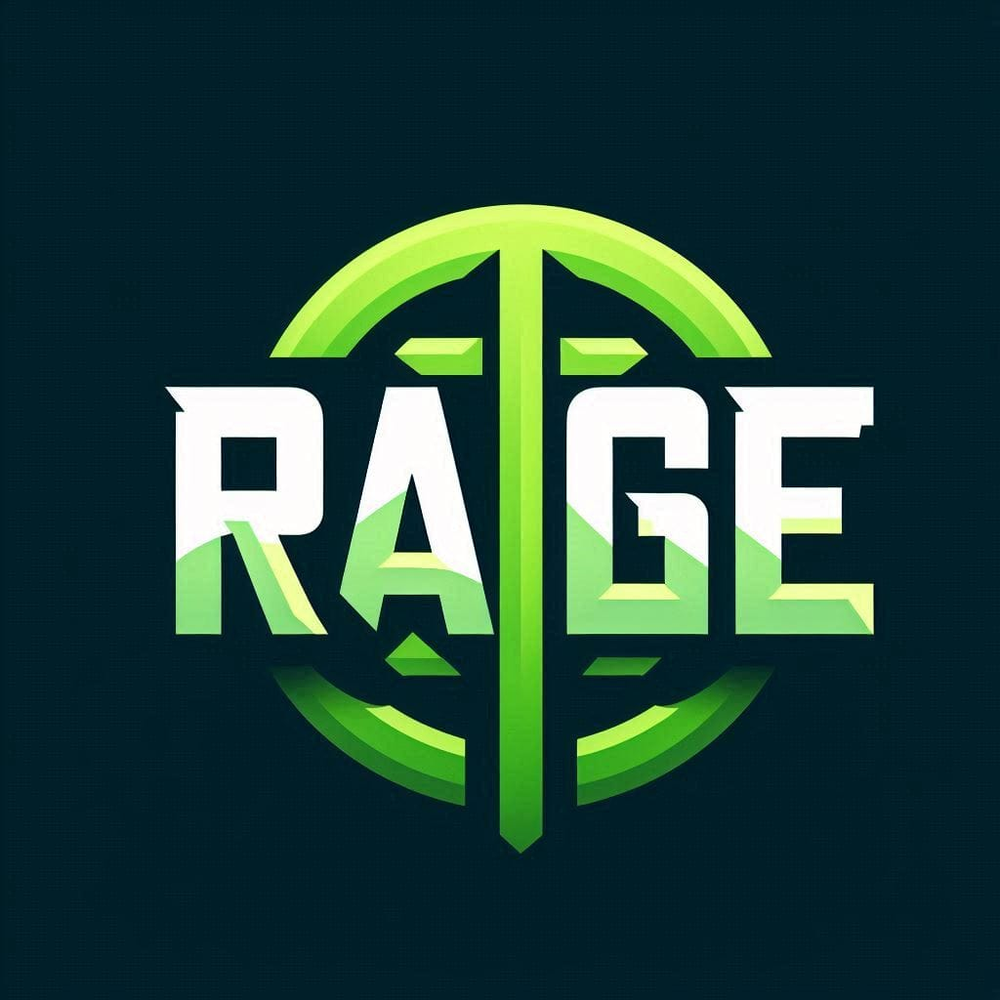

<mat-toolbar color="primary">
  <mat-toolbar-row>
    <button ngClass="app-menu" mat-button [matMenuTriggerFor]="mainMenu"><mat-icon ngClass="mat-icon-big">menu</mat-icon></button> 
    <h1 ngClass="headerTitle">{{'rageTitle' | translate}}. {{'HELLO' | translate}}</h1>
    <a ngClass="logo" href="/"></a>
  </mat-toolbar-row>
</mat-toolbar>

<mat-menu #mainMenu="matMenu">
  <button mat-menu-item class="example-menu-bar-item" [matMenuTriggerFor]="consumptions">{{'consumptions' | translate}}</button>
  <button mat-menu-item class="example-menu-bar-item" [matMenuTriggerFor]="emissions">{{'emissions' | translate}}</button>
  <hr>
  <button mat-menu-item ngClass="rage-menu-item">{{'emissionFactors' | translate}}</button>
  <hr>
  <button mat-menu-item ngClass="rage-menu-item" routerLink="/organ-gen-data">{{'organizationGeneralData' | translate}}</button>
  <hr>
  <button mat-menu-item (click)="switchLanguage('en')">English</button>
  <button mat-menu-item (click)="switchLanguage('es')">Español</button>
  <hr>
  <button  mat-menu-item ngClass="rage-menu-item" (cdkMenuItemTriggered)="reset()">{{'logout' | translate}}</button>
</mat-menu>
<mat-menu #consumptions="matMenu">
  <button mat-menu-item routerLink="fixed-installation">{{'fixedInstallationsFuelConsumption' | translate}}</button>
  <button mat-menu-item>{{'fuelConsumptionVeniclesMachinery' | translate}}</button>
  <button mat-menu-item>{{'fugitiveEmissions' | translate}}</button>
  <button mat-menu-item>{{'processEmissions' | translate}}</button>
</mat-menu>
<mat-menu #emissions="matMenu">
  <button mat-menu-item class="example-menu-bar-item" routerLink="/electricity-consumption">{{'electricityOtherEnergies' | translate}}</button>
</mat-menu>
